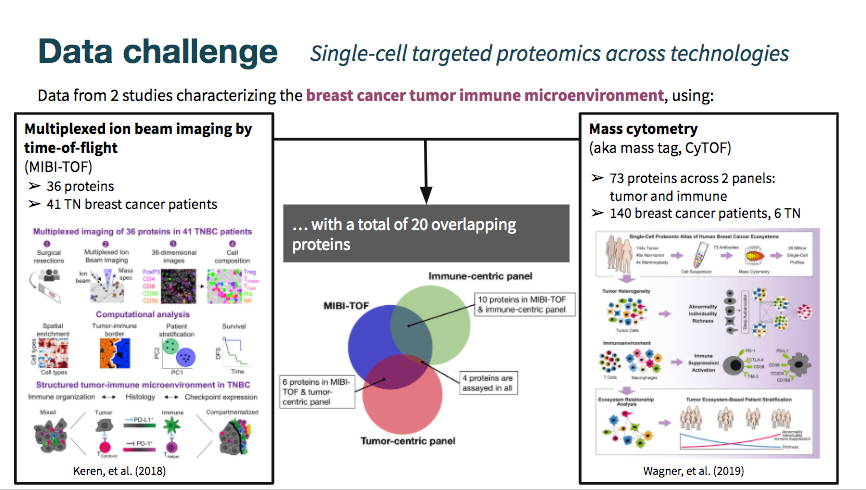
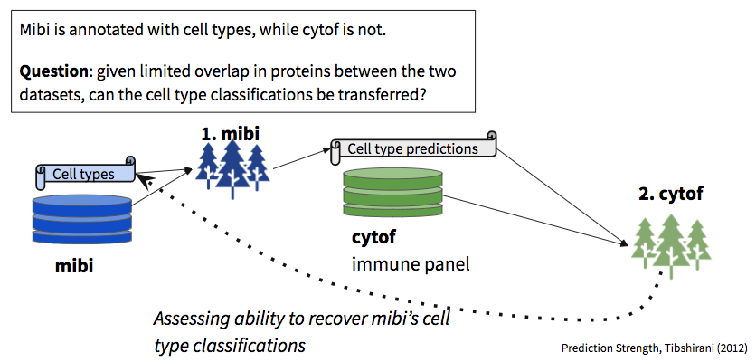
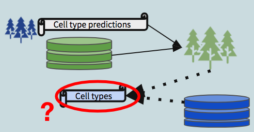

Visit the BIRSBiointegration Hackathon page to read more about these datasets.
The MIBI-TOF dataset came annotated with cell type classifications, while the cyTOF datasets did not include them. As shown in the Venn diagram above, there is some overlap in markers measured across datasets, but still limited intersection.
The mibi-tof dataset comprised a single panel of 36 proteins.
The cytof datasets included data from two different panels, totalling 73 proteins. See the hackathon page linked above for a detailed description of the datasets.
In this vignette we examine the robustness of predictions between datasets, given limited overlap in shared markers.

In total, we built three sets of random forest models:
We then use the second model to predict labels for the mibi dataset (dotted arrow in the schematic diagram). These predictions, when compared with the actual labels, provide a view into the robustness of shared structure in the data with respect to the defined groups.

library(corral) library(SingleCellExperiment) library(ggplot2) library(reshape2) library(scater) library(ggthemes) library(pals) library(caret) library(randomForest)
Make sure that you download the hackathon data files and add them to the data folder.
Download data here: https://drive.google.com/open?id=1Qb6VgVkWfy2x5Dr7kzqMAfzOLas1G6v-
Read more about the datasets and the challenge: https://github.com/BIRSBiointegration/Hackathon/tree/master/sc-targeted-proteomics
Some of the protein names don’t match exactly between the two batches. To correct this, we will re-map them. We also normalize the expression values between 0 and 1 to correct differences in scale between the datasets.
datnames <- c('mibi','livecells','tcell','cd45','myeloid','epith') map_from <- c('HLADR', 'FOXP3', 'HLA-DR','CD279 (PD_1)', 'CD274 (PD_L1)', 'CD8a','PD-L1') map_to <- c('HLA_DR', 'FoxP3', 'HLA_DR', 'PD1', 'PD_L1', 'CD8','PD_L1') for(dn in datnames){ objn <- paste0(dn,'.sce') sce <- eval(as.name(objn)) mat <- t(apply(assay(sce), FUN = norm01, MARGIN = 1)) assay(sce) <- mat inds_map <- which(map_from %in% rownames(sce)) rownames(sce) <- plyr::mapvalues(x = rownames(sce),from = map_from[inds_map], to = map_to[inds_map]) assign(objn, sce) } consolidated <- colData(mibi.sce)$tumor_group consolidated[which(consolidated == "Immune")] <- colData(mibi.sce)$immune_group[which(consolidated == "Immune")] colData(mibi.sce)$consolidated <- consolidated
xprmat <- t(assay(mibi.sce)[which(rowData(mibi.sce)$is_protein == 1),]) colnames(xprmat) <- rownames(mibi.sce)[which(rowData(mibi.sce)$is_protein == 1)] mibi_full <- cbind(colData(mibi.sce)[,c('SampleID','cellLabelInImage','tumor_group','immune_group')], consolidated, xprmat)[which(mibi.sce$SampleID < 41),] mibi_dat <- mibi_full[,5:43] mibi_dat$consolidated <- as.factor(mibi_dat$consolidated)
picking train/test inds
including all features
set.seed(1234) rf_mod <- randomForest::randomForest(consolidated ~ ., data = mibi_dat[train_inds,], ntree = 100, importance = TRUE) varImpPlot(rf_mod) rf_imp <- randomForest::importance(rf_mod) rf_imp <- data.frame(Variables = rownames(rf_imp), rf_imp) ggplot(rf_imp, aes(x = reorder(Variables, MeanDecreaseGini), y = MeanDecreaseGini)) + geom_bar(stat='identity', colour = 'black') + labs(x = 'Variables', title = 'Relative Variable Importance') + coord_flip()
predictions on holdout
# predict the outcome on test set basic_rf_pred <- predict(rf_mod, mibi_dat[test_inds,]) # compare predicted outcome and true outcome basic_rf_cm <- confusionMatrix(basic_rf_pred, as.factor(mibi_dat$consolidated[test_inds])) rf_cm_pct <- sweep(basic_rf_cm$table,MARGIN = 1, STATS = rowSums(basic_rf_cm$table),FUN = '/') gg <- ggplot(melt(rf_cm_pct), aes(Prediction, Reference, fill = value)) + theme(axis.text.x = element_text(angle = 90, hjust = 1)) + geom_tile() #+ scale_fill_viridis_b() gg # setting correct predictions to 0 to increase contrast rf_cm_pct_contrast <- rf_cm_pct diag(rf_cm_pct_contrast) <- 0 gg <- ggplot(melt(rf_cm_pct_contrast), aes(Prediction, Reference, fill = value)) + theme(axis.text.x = element_text(angle = 90, hjust = 1)) + geom_tile() #+ scale_fill_viridis_b() gg ggplot(melt(rf_cm_pct_contrast), aes(x = value, y = Reference, fill = Prediction)) + geom_bar(position = 'fill', stat = 'identity') + ggtitle('Distribution of incorrect predictions', subtitle = 'correct predictions are removed\nvalue is in percentage within each cell type') ggplot(melt(rf_cm_pct_contrast), aes(x = value, y = Reference, fill = Prediction)) + geom_bar(position = 'stack', stat = 'identity') + ggtitle('Distribution of incorrect predictions', subtitle = 'correct predictions are removed\nvalue is in percentage within each cell type') rf_cm_contrast <- basic_rf_cm$table diag(rf_cm_contrast) <- 0 ggplot(melt(rf_cm_contrast), aes(x = value, y = Reference, fill = Prediction)) + geom_bar(position = 'stack', stat = 'identity') + ggtitle('Distribution of incorrect predictions', subtitle = 'correct predictions are removed\nvalue is in number of cells') ggplot(melt(rf_cm_contrast/sum(rf_cm_contrast)), aes(x = value, y = Reference, fill = Prediction)) + geom_bar(position = 'stack', stat = 'identity') + ggtitle('Distribution of incorrect predictions', subtitle = 'correct predictions are removed\nvalue is in percent across all errors\n(basically another way of looking at confusion matrix)') rf_cm_withcorrect <- basic_rf_cm$table diag(rf_cm_withcorrect) <- 0 rf_cm_withcorrect <- data.frame(cbind(diag(basic_rf_cm$table),rf_cm_withcorrect)) ggplot(melt(data.frame(celltype = rownames(rf_cm_withcorrect),rf_cm_withcorrect), id.vars = c('celltype')), aes(x = value, y = celltype, fill = variable)) + geom_bar(position = 'stack', stat = 'identity') + ggtitle('Distribution of all predictions', subtitle = 'correct predictions are reclassified as V1\n(basically another way of looking at confusion matrix)')
tokeep <- c('Precision','Recall','Balanced Accuracy') ggplot(melt(data.frame(class = rownames(basic_rf_cm$byClass),basic_rf_cm$byClass[,tokeep]), id.vars = c('class')), aes(value, class, fill = variable)) + geom_bar(stat = 'identity', position = position_dodge()) + ggtitle('Random forest on mibi prediction results on test')
tum_mibi_full <- mibi_full imm_mibi_full <- mibi_full tum_int_genes <- intersect(colnames(tum_mibi_full), rownames(livecells.sce)) imm_int_genes <- intersect(colnames(imm_mibi_full), rownames(tcell.sce)) to_keep <- c('SampleID','cellLabelInImage','tumor_group','immune_group','consolidated') # tumor panel tum_mibi_full <- tum_mibi_full[,c(to_keep,tum_int_genes)] tum_mibi_dat <- tum_mibi_full[,c('consolidated',tum_int_genes)] # immune panel imm_mibi_full <- imm_mibi_full[,c(to_keep,imm_int_genes)] imm_mibi_dat <- imm_mibi_full[,c('consolidated',imm_int_genes)]
picking train/test inds
including all features
set.seed(1234) tum_rf_mod <- randomForest::randomForest(as.factor(consolidated) ~ ., data = tum_mibi_dat[train_inds,], ntree = 100, importance = TRUE) varImpPlot(tum_rf_mod) tum_rf_imp <- randomForest::importance(tum_rf_mod) tum_rf_imp <- data.frame(Variables = rownames(tum_rf_imp), tum_rf_imp) ggplot(tum_rf_imp, aes(x = reorder(Variables, MeanDecreaseGini), y = MeanDecreaseGini)) + geom_bar(stat='identity', colour = 'black') + labs(x = 'Variables', title = 'Relative Variable Importance: tumor panel RF') + coord_flip() imm_rf_mod <- randomForest::randomForest(as.factor(consolidated) ~ ., data = imm_mibi_dat[train_inds,], ntree = 100, importance = TRUE) varImpPlot(imm_rf_mod) imm_rf_imp <- randomForest::importance(imm_rf_mod) imm_rf_imp <- data.frame(Variables = rownames(imm_rf_imp), imm_rf_imp) ggplot(imm_rf_imp, aes(x = reorder(Variables, MeanDecreaseGini), y = MeanDecreaseGini)) + geom_bar(stat='identity', colour = 'black') + labs(x = 'Variables', title = 'Relative Variable Importance: Immune panel RF') + coord_flip()
predictions on holdout: tumor
tum_rf_pred <- predict(tum_rf_mod, tum_mibi_dat[test_inds,]) tum_rf_cm <- confusionMatrix(tum_rf_pred, as.factor(tum_mibi_dat$consolidated[test_inds])) tum_rf_cm_pct <- sweep(tum_rf_cm$table,MARGIN = 1,STATS = rowSums(tum_rf_cm$table),FUN = '/') gg <- ggplot(melt(tum_rf_cm_pct), aes(Prediction, Reference, fill = value)) + theme(axis.text.x = element_text(angle = 90, hjust = 1)) + geom_tile() + ggtitle('Tumor panel RF model:', subtitle = 'mibi on test') #+ scale_fill_viridis_b() gg # setting correct predictions to 0 to increase contrast rf_cm_pct_contrast <- rf_cm_pct diag(rf_cm_pct_contrast) <- 0 gg <- ggplot(melt(rf_cm_pct_contrast), aes(Prediction, Reference, fill = value)) + theme(axis.text.x = element_text(angle = 90, hjust = 1)) + geom_tile() #+ scale_fill_viridis_b() gg ggplot(melt(rf_cm_pct_contrast), aes(x = value, y = Reference, fill = Prediction)) + geom_bar(position = 'fill', stat = 'identity') + ggtitle('Distribution of incorrect predictions: tumor', subtitle = 'correct predictions are removed\nvalue is in percentage within each cell type') ggplot(melt(rf_cm_pct_contrast), aes(x = value, y = Reference, fill = Prediction)) + geom_bar(position = 'stack', stat = 'identity') + ggtitle('Distribution of incorrect predictions: tumor', subtitle = 'correct predictions are removed\nvalue is in percentage within each cell type') rf_cm_contrast <- tum_rf_cm$table diag(rf_cm_contrast) <- 0 ggplot(melt(rf_cm_contrast), aes(x = value, y = Reference, fill = Prediction)) + geom_bar(position = 'stack', stat = 'identity') + ggtitle('Distribution of incorrect predictions: tumor', subtitle = 'correct predictions are removed\nvalue is in number of cells') ggplot(melt(rf_cm_contrast/sum(rf_cm_contrast)), aes(x = value, y = Reference, fill = Prediction)) + geom_bar(position = 'stack', stat = 'identity') + ggtitle('Distribution of incorrect predictions: tumor', subtitle = 'correct predictions are removed\nvalue is in percent across all errors\n(basically another way of looking at confusion matrix)') rf_cm_withcorrect <- tum_rf_cm$table diag(rf_cm_withcorrect) <- 0 rf_cm_withcorrect <- data.frame(cbind(diag(tum_rf_cm$table),rf_cm_withcorrect)) ggplot(melt(data.frame(celltype = rownames(rf_cm_withcorrect),rf_cm_withcorrect), id.vars = c('celltype')), aes(x = value, y = celltype, fill = variable)) + geom_bar(position = 'stack', stat = 'identity') + ggtitle('Distribution of all predictions: tumor', subtitle = 'correct predictions are reclassified as V1\n(basically another way of looking at confusion matrix)') tokeep <- c('Precision','Recall','Balanced Accuracy') ggplot(melt(data.frame(class = rownames(tum_rf_cm$byClass),tum_rf_cm$byClass[,tokeep]), id.vars = c('class')), aes(value, class, fill = variable)) + geom_bar(stat = 'identity', position = position_dodge()) + ggtitle('Random forest on mibi prediction', subtitle = "Results on test: tumor panel")
predictions on holdout: immune
imm_rf_pred <- predict(imm_rf_mod, imm_mibi_dat[test_inds,]) imm_rf_cm <- confusionMatrix(imm_rf_pred, as.factor(imm_mibi_dat$consolidated[test_inds])) imm_rf_cm_pct <- sweep(imm_rf_cm$table,MARGIN = 1,STATS = rowSums(imm_rf_cm$table),FUN = '/') gg <- ggplot(melt(imm_rf_cm_pct), aes(Prediction, Reference, fill = value)) + theme(axis.text.x = element_text(angle = 90, hjust = 1)) + geom_tile() + ggtitle('Immune panel RF model:', subtitle = 'mibi on test') #+ scale_fill_viridis_b() gg # setting correct predictions to 0 to increase contrast rf_cm_pct_contrast <- rf_cm_pct diag(rf_cm_pct_contrast) <- 0 gg <- ggplot(melt(rf_cm_pct_contrast), aes(Prediction, Reference, fill = value)) + theme(axis.text.x = element_text(angle = 90, hjust = 1)) + geom_tile() #+ scale_fill_viridis_b() gg ggplot(melt(rf_cm_pct_contrast), aes(x = value, y = Reference, fill = Prediction)) + geom_bar(position = 'fill', stat = 'identity') + ggtitle('Distribution of incorrect predictions: immune', subtitle = 'correct predictions are removed\nvalue is in percentage within each cell type') ggplot(melt(rf_cm_pct_contrast), aes(x = value, y = Reference, fill = Prediction)) + geom_bar(position = 'stack', stat = 'identity') + ggtitle('Distribution of incorrect predictions: immune', subtitle = 'correct predictions are removed\nvalue is in percentage within each cell type') rf_cm_contrast <- imm_rf_cm$table diag(rf_cm_contrast) <- 0 ggplot(melt(rf_cm_contrast), aes(x = value, y = Reference, fill = Prediction)) + geom_bar(position = 'stack', stat = 'identity') + ggtitle('Distribution of incorrect predictions: immune', subtitle = 'correct predictions are removed\nvalue is in number of cells') ggplot(melt(rf_cm_contrast/sum(rf_cm_contrast)), aes(x = value, y = Reference, fill = Prediction)) + geom_bar(position = 'stack', stat = 'identity') + ggtitle('Distribution of incorrect predictions: immune', subtitle = 'correct predictions are removed\nvalue is in percent across all errors\n(basically another way of looking at confusion matrix)') rf_cm_withcorrect <- imm_rf_cm$table diag(rf_cm_withcorrect) <- 0 rf_cm_withcorrect <- data.frame(cbind(diag(imm_rf_cm$table),rf_cm_withcorrect)) ggplot(melt(data.frame(celltype = rownames(rf_cm_withcorrect),rf_cm_withcorrect), id.vars = c('celltype')), aes(x = value, y = celltype, fill = variable)) + geom_bar(position = 'stack', stat = 'identity') + ggtitle('Distribution of all predictions: immune', subtitle = 'correct predictions are reclassified as V1\n(basically another way of looking at confusion matrix)') tokeep <- c('Sensitivity', 'Specificity','Precision','Recall','Balanced Accuracy') ggplot(melt(data.frame(class = rownames(imm_rf_cm$byClass),imm_rf_cm$byClass[,tokeep]), id.vars = c('class')), aes(value, class, fill = variable)) + geom_bar(stat = 'identity', position = position_dodge()) + ggtitle('Random forest on mibi prediction', subtitle = "Results on test: immune panel")
# TUMOR library(ComplexHeatmap) livecells_rf_pred <- predict(tum_rf_mod, t(assay(livecells.sce)[tum_int_genes,])) table(livecells_rf_pred) livecells_ct_expr_rf <- find_ct_expr(assay(livecells.sce), livecells_rf_pred) Heatmap(livecells_ct_expr_rf, name = paste0('livecells','_cytof\navg expr by mibi proj celltypes'), clustering_distance_rows = 'spearman', clustering_method_rows = 'average', clustering_distance_columns = 'spearman', clustering_method_columns = 'average') epith_rf_pred <- predict(tum_rf_mod, t(assay(epith.sce)[tum_int_genes,])) table(epith_rf_pred) epith_ct_expr_rf <- find_ct_expr(assay(epith.sce), epith_rf_pred) show(Heatmap(epith_ct_expr_rf, name = paste0('epith','_cytof\navg expr by mibi proj celltypes'), clustering_distance_rows = 'spearman', clustering_method_rows = 'average', clustering_distance_columns = 'spearman', clustering_method_columns = 'average')) # IMMUNE # recoding to accommodate rf imm_scelist <- list(tcell = tcell.sce, cd45 = cd45.sce, myeloid = myeloid.sce, mibi = mibi.sce) imm_ct_expr_rf <- list() imm_preds <- list() for (imm in names(imm_scelist)){ rf_pred <- predict(imm_rf_mod, t(assay(imm_scelist[[imm]])[imm_int_genes,])) table(rf_pred) imm_preds[[imm]] <- rf_pred imm_ct_expr_rf[[imm]] <- find_ct_expr(assay(imm_scelist[[imm]]), rf_pred) show(Heatmap(imm_ct_expr_rf[[imm]], name = paste0(imm,'_cytof\navg expr by mibi proj celltypes'), clustering_distance_rows = 'spearman', clustering_method_rows = 'average', clustering_distance_columns = 'spearman', clustering_method_columns = 'average')) }
To validate the cytof predictions, building models to try to recover mibi cell types
set.seed(94010) livecells_rf_dat <- cbind(livecells_rf_pred, data.frame(t(assay(livecells.sce)[tum_int_genes,]))) livecells_rf_mod <- randomForest::randomForest(droplevels(livecells_rf_pred) ~ ., data = livecells_rf_dat, ntree = 100, importance = TRUE) mibi_lc_rf_pred <- predict(livecells_rf_mod, tum_mibi_full[,tum_int_genes]) table(mibi_lc_rf_pred)
correct <- as.factor(tum_mibi_dat$consolidated) predictions <- factor(mibi_lc_rf_pred, levels(correct)) #EDIT ME tum_or_im <- 'Tumor'# EDIT ME rf_cm <- confusionMatrix(predictions, correct) rf_cm rf_cm_pct <- sweep(rf_cm$table,MARGIN = 1,STATS = rowSums(rf_cm$table),FUN = '/') rf_cm_pct gg <- ggplot(melt(rf_cm_pct), aes(Prediction, Reference, fill = value)) + theme(axis.text.x = element_text(angle = 90, hjust = 1)) + geom_tile() + ggtitle(paste0(tum_or_im,' panel RF model:'), subtitle = 'cytof on mibi')#+ scale_fill_viridis_b() gg tokeep <- c('Precision','Recall','Balanced Accuracy') ggplot(melt(data.frame(class = rownames(rf_cm$byClass),rf_cm$byClass[,tokeep]), id.vars = c('class')), aes(value, class, fill = variable)) + geom_bar(stat = 'identity', position = position_dodge()) + ggtitle("Random forest on cytof's mibi prediction", subtitle = paste0("Results on test: ", tum_or_im, " panel"))
set.seed(321) cd45_rf_dat <- cbind(pred_ct = imm_preds[['cd45']], data.frame(t(assay(imm_scelist[['cd45']])[imm_int_genes,]))) cd45_rf_mod <- randomForest::randomForest(droplevels(pred_ct) ~ ., data = cd45_rf_dat, ntree = 100, importance = TRUE) mibi_cd45_rf_pred <- predict(cd45_rf_mod, t(assay(imm_scelist[['mibi']])[imm_int_genes,])) table(mibi_cd45_rf_pred)
set.seed(321) train_inds <- sample(1:sum(length(imm_preds[['tcell']]), length(imm_preds[['myeloid']])),500000, replace = FALSE) tc_m_rf_dat <- rbind( cbind(pred_ct = imm_preds[['tcell']], data.frame(t(assay(imm_scelist[['tcell']])[imm_int_genes,]))), cbind(pred_ct = imm_preds[['myeloid']], data.frame(t(assay(imm_scelist[['myeloid']])[imm_int_genes,])))) tc_m_rf_mod <- randomForest::randomForest(droplevels(pred_ct) ~ ., data = tc_m_rf_dat[train_inds,], ntree = 100, importance = TRUE) mibi_tc_m_rf_pred <- predict(tc_m_rf_mod, t(assay(imm_scelist[['mibi']])[imm_int_genes,])) table(mibi_tc_m_rf_pred)
correct <- as.factor(consolidated) predictions <- factor(mibi_cd45_rf_pred, levels(correct)) #EDIT ME tum_or_im <- 'Immune (CD45)'# EDIT ME rf_cm <- confusionMatrix(predictions, correct) rf_cm rf_cm_pct <- sweep(rf_cm$table,MARGIN = 1,STATS = rowSums(rf_cm$table),FUN = '/') rf_cm_pct ggplot(melt(rf_cm_pct), aes(Prediction, Reference, fill = value)) + theme(axis.text.x = element_text(angle = 90, hjust = 1)) + geom_tile() + ggtitle(paste0(tum_or_im,' panel RF model:'), subtitle = 'cytof on mibi')#+ scale_fill_viridis_b() tokeep <- c('Precision','Recall','Balanced Accuracy') ggplot(melt(data.frame(class = rownames(rf_cm$byClass),rf_cm$byClass[,tokeep]), id.vars = c('class')), aes(value, class, fill = variable)) + geom_bar(stat = 'identity', position = position_dodge()) + ggtitle("Random forest on cytof's mibi prediction", subtitle = paste0("Results on test: ", tum_or_im, " panel"))
correct <- as.factor(consolidated) predictions <- factor(mibi_tc_m_rf_pred, levels(correct)) #EDIT ME tum_or_im <- 'Immune (TC + M)'# EDIT ME rf_cm <- confusionMatrix(predictions, correct) rf_cm rf_cm_pct <- sweep(rf_cm$table,MARGIN = 1,STATS = rowSums(rf_cm$table),FUN = '/') rf_cm_pct ggplot(melt(rf_cm_pct), aes(Prediction, Reference, fill = value)) + theme(axis.text.x = element_text(angle = 90, hjust = 1)) + geom_tile() + ggtitle(paste0(tum_or_im,' panel RF model:'), subtitle = 'cytof on mibi')#+ scale_fill_viridis_b() tokeep <- c('Precision','Recall','Balanced Accuracy') ggplot(melt(data.frame(class = rownames(rf_cm$byClass),rf_cm$byClass[,tokeep]), id.vars = c('class')), aes(value, class, fill = variable)) + geom_bar(stat = 'identity', position = position_dodge()) + ggtitle("Random forest on cytof's mibi prediction", subtitle = paste0("Results on test: ", tum_or_im, " panel")) plots_from_cm <- function(rf_cm, title, subtitle){ rf_cm_pct <- sweep(rf_cm$table,MARGIN = 1,STATS = rowSums(rf_cm$table),FUN = '/') rf_cm_pct gg <- ggplot(melt(rf_cm_pct), aes(Prediction, Reference, fill = value)) + theme(axis.text.x = element_text(angle = 90, hjust = 1)) + geom_tile() + ggtitle(paste0(tum_or_im,' panel RF model:'), subtitle = 'cytof on mibi')#+ scale_fill_viridis_b() show(gg) tokeep <- c('Precision','Recall','Balanced Accuracy') gg <- ggplot(melt(data.frame(class = rownames(rf_cm$byClass),rf_cm$byClass[,tokeep]), id.vars = c('class')), aes(value, class, fill = variable)) + geom_bar(stat = 'identity', position = position_dodge()) + ggtitle(title, subtitle = subtitle) + show(gg) }
Comparison of classifications from: tumor (livecells), cd45, tc+m
correct <- as.factor(consolidated) tcm_preds <- factor(mibi_tc_m_rf_pred, levels(correct)) cd45_preds<- factor(mibi_cd45_rf_pred, levels(correct)) tcm_cd45_cm <- confusionMatrix(tcm_preds, cd45_preds) plots_from_cm(tcm_cd45_cm,'CD45 vs Tc+M model cross-comparison','predicting mibi') correct_tum <- as.factor(tum_mibi_dat$consolidated) tum_preds <- factor(mibi_lc_rf_pred, levels(correct)) tcm_tum_cm <- confusionMatrix(tcm_preds, tum_preds) plots_from_cm(tcm_tum_cm,'Tumor vs Tc+M model cross-comparison','predicting mibi')
Harvard School of Public Health↩︎